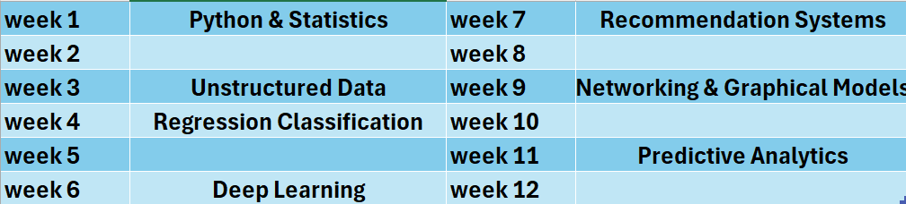

My professional journey has progressed through key roles in data engineering, analytics, and data science. At the IRS, I am focused on augmenting my AI/ML skills by leading projects that blend diverse data sources including structured and unstructured text. I create impactful data products and reproducible code for high performance compute and cloud environments. I am also an active collaborator, dedicated to empowering community engagement within my team. Previously, I embraced my first fully remote role at Frontier Communications as a data engineer. There, I tackled the challenge of matching call center records to user accounts, automating critical reports using SQL, R, and C#. Prior to that, as a Senior Associate at Cognizant working with Florida Power & Light, I dived into smart meter data to develop time-series features and build classification models for a critical revenue protection project. My passion for data analytics was first ignited during an alloy analytics project with the National Energy Technology Lab (NETL), where I used R and Python to predict material properties. I am committed to continuous professional growth, having completed several certificates, and am currently finishing a specialized course in Generative AI.
Summary of projects
- Frontier Communications Call center records matching project Report DS1
- Cognizant Technology, FP&L Smart meter time series classification project Report DS2
- NETL Alloy analytics project Report DS3
Graduate school during my masters at PITT & GWU has been broad in terms of training, with projects using databases, electrical embedded systems, neuroscience mathematics, statistics and ethics.
I was a teaching fellow for two years at the electrical engineering department and did a two year neuroimaging NIH fellowship.
My research work at University of Pittsburgh Slides, Thesis & PLOS Paper
MIT-IDSS Great Learning Certificate & Transcript
Projects Nov2024-Mar2025:
